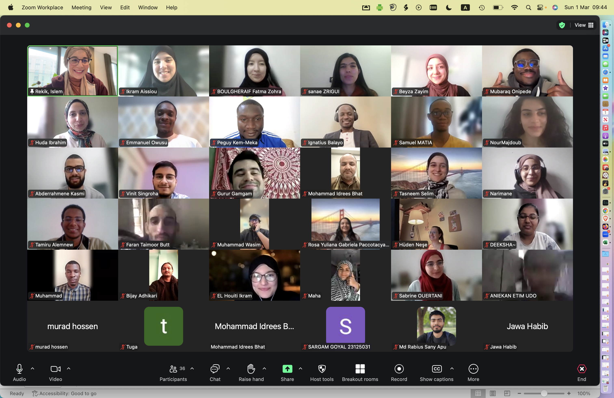
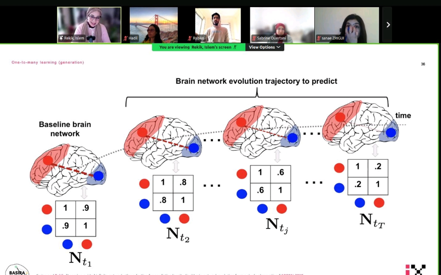
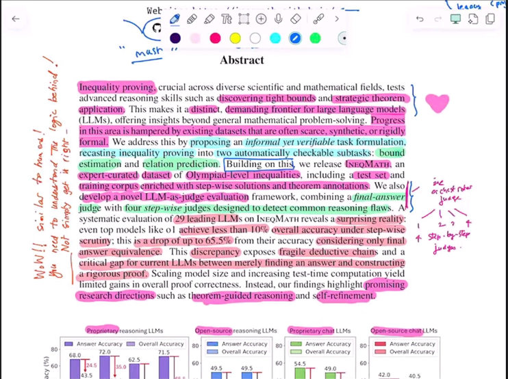
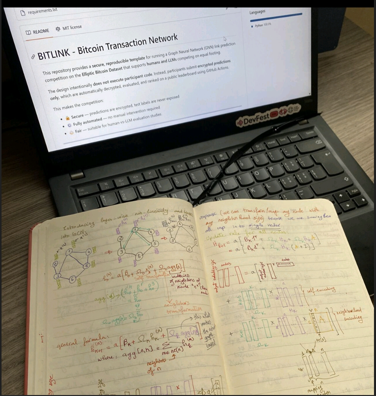

We never rise alone
we always rise TOGETHER
Here is our success story of
GNNs for Rising Stars (G4RS) Program, led by Dr Islem Rekik.
It began as an idea to spread knowledge, create opportunities,
and empower students from low- and middle-income countries became a journey that led to an
A* publication at EMNLP 2026 Main Conference.
Glimpses of the Journey ✨




It wasn't easy
But it was worth it. ✨
The Journey, Through Their Eyes